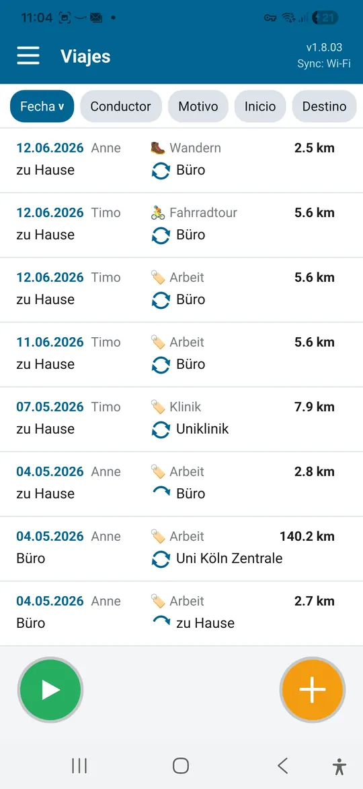
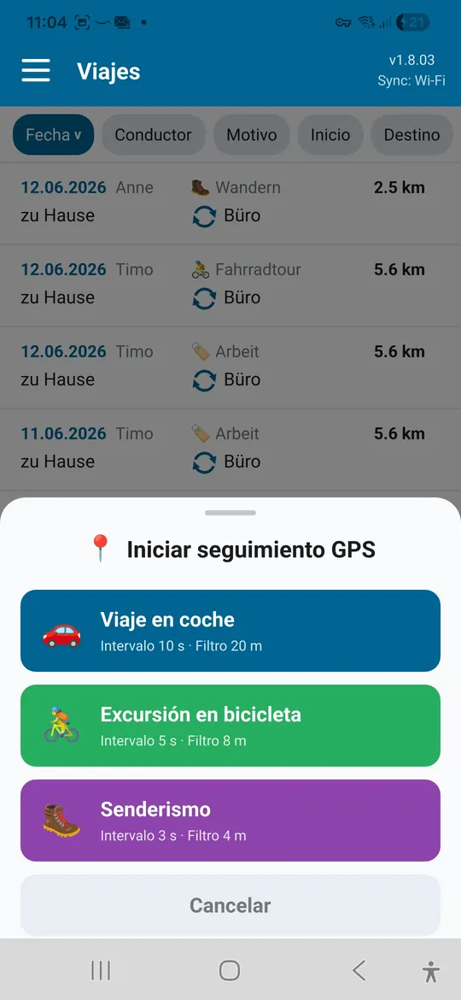
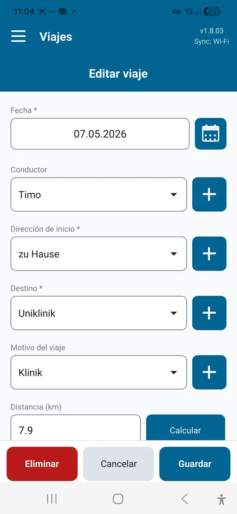
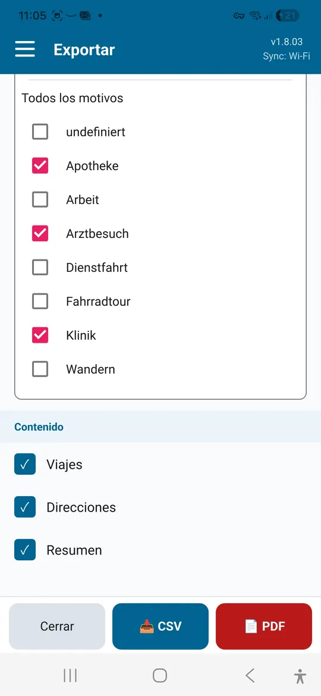

Autónomos y pequeñas empresas
Anota visitas a clientes y viajes de trabajo con motivo y distancia. El resumen mensual sirve de base para facturación e impuestos.
Libro de rutas para Android y Windows
Driver's Log registra trayectos con fecha, conductor, motivo, origen y destino, y calcula la distancia automáticamente. Para viajes de trabajo, citas médicas y salidas de ocio, con exportación a PDF o CSV.
| Fecha | Conductor | Motivo | Origen → Destino | km |
|---|---|---|---|---|
| 06/10 | Ana | Visita a cliente | Oficina → Weber S.L. | 38,4 |
| 09/10 | Tomás | Médico | Casa → Consulta Dra. Klein | 12,6 |
| 12/10 | Ana | Bici | Ribera → Casco antiguo | 24,1 |
| Total | 75,1 |

Un libro de rutas ayuda siempre que haya que justificar, reclamar o simplemente guardar trayectos.
Anota visitas a clientes y viajes de trabajo con motivo y distancia. El resumen mensual sirve de base para facturación e impuestos.
Reúne los trayectos a consultas, clínicas y terapias como justificante para la declaración o un reembolso.
Documenta los trayectos para tu asociación, el voluntariado o el cuidado de familiares y reclámalos de una vez.
Graba la ruta por GPS, pon nombre al inicio y al final y guarda la distancia.
Registra la distancia recorrida por GPS, aunque el móvil vaya en el bolsillo.
Nota fiscal: Hacienda puede exigir requisitos formales estrictos, por ejemplo para un coche de empresa. Si tienes dudas, consulta con tu asesor fiscal si tus registros son suficientes.
Todo lo que necesita un libro de rutas, sin papeleo.
Guarda orígenes y destinos en la agenda y elígelos después con un toque. Las sugerencias vienen de OpenStreetMap.
La distancia entre origen y destino se calcula por ruta, para la ida, la vuelta o ambas.
Para coche, bici o senderismo. La grabación sigue en segundo plano y después rellena el formulario del trayecto.
Asigna cada trayecto a una persona, por ejemplo cuando una familia o un equipo comparten coche.
Visita a cliente, médico, compras: crea tus propios motivos y ordena la lista por ellos.
Por mes o año completo y por motivo, con lista de trayectos, resumen por ruta y lista de direcciones.
Copia diaria en una carpeta que tú eliges, que se conserva aunque desinstales la app.
Español, alemán, inglés, francés y neerlandés.
Sincronización Wi-Fi · Pro
Tu dispositivo Android y tu PC con Windows sincronizan los trayectos directamente por tu Wi-Fi. Un trayecto guardado en un dispositivo aparece poco después en los demás.





Capturas con datos de ejemplo.
Driver's Log es gratis. Una compra única dentro de la app desbloquea Pro, sin suscripción.
| Función | Free | Pro |
|---|---|---|
| Trayectos | hasta 25 | ilimitados |
| Grabación GPS | ✓ | ✓ |
| Exportar a PDF y CSV | ✓ | ✓ |
| Varios conductores y motivos propios | ✓ | ✓ |
| Copia de seguridad automática | ✓ | ✓ |
| Sincronización Wi-Fi entre dispositivos | – | ✓ |
| App de Windows con sincronización | – | ✓ |
Google Play muestra el precio actual en tu moneda.
La app de Windows es gratuita. Para sincronizar con el móvil, la app de Android necesita Pro.
Descargar paraWindowsSolo en tus propios dispositivos, en una base de datos local. No hay cuenta de usuario ni almacenamiento en la nube.
Solo para las sugerencias de direcciones y el cálculo automático de distancias. Registrar trayectos y la sincronización Wi-Fi funcionan sin conexión.
Todos tus trayectos se conservan. Los nuevos se añaden después con Pro.
La exportación es una buena base para la declaración y los reembolsos. Que sea suficiente depende de tu situación y de las normas aplicables.